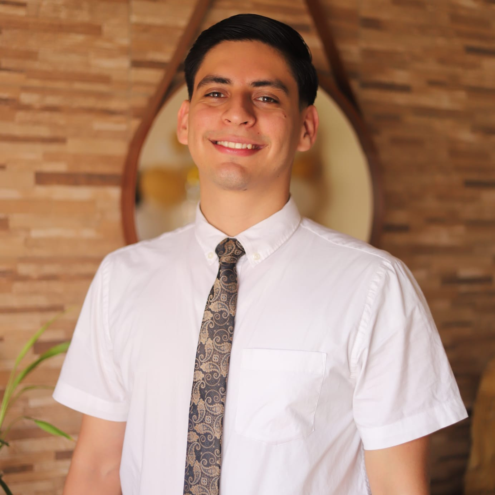

Matias Gutierrez | WDD 130
Hi! I am Matias Gutierrez, I am from Bolivia and I am 23 years old. I got married 6 months ago, this time has been and incredible experience for me and my wife. At the moment we don't have any children, but we have adopted a dog. I work as a Power Apps developer, most of our procedures are low code but for more specific task or fitler we use code, that's why I started this journey at BYU-I Online. One thing I like to do in my daily routine is to drink mate! It keeps me focused and awake in the morning, I also like to play soccer and learn more about Python in my spare time.